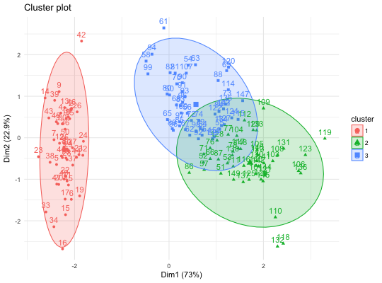
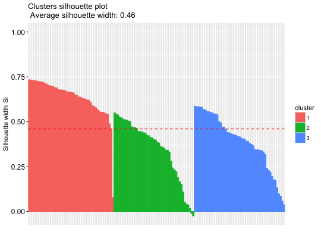

Silhouette (Si) analysis is a cluster validation approach that
measures how well an observation is clustered and it estimates the average
distance between clusters. fviz_silhouette() provides ggplot2-based elegant
visualization of silhouette information from i) the result of
silhouette(), pam(),
clara() and fanny() [in
cluster package]; ii) eclust() and hcut() [in
factoextra].
fviz_silhouette(sil.obj, label = FALSE, print.summary = TRUE, ...)
return a ggplot
- Observations with a large silhouhette Si (almost 1) are very well clustered.
- A small Si (around 0) means that the observation lies between two clusters.
- Observations with a negative Si are probably placed in the wrong cluster.
fviz_cluster, hcut,
hkmeans, eclust, fviz_dend
set.seed(123) # Data preparation # +++++++++++++++ data("iris") head(iris)#> Sepal.Length Sepal.Width Petal.Length Petal.Width Species #> 1 5.1 3.5 1.4 0.2 setosa #> 2 4.9 3.0 1.4 0.2 setosa #> 3 4.7 3.2 1.3 0.2 setosa #> 4 4.6 3.1 1.5 0.2 setosa #> 5 5.0 3.6 1.4 0.2 setosa #> 6 5.4 3.9 1.7 0.4 setosa# Remove species column (5) and scale the data iris.scaled <- scale(iris[, -5]) # K-means clustering # +++++++++++++++++++++ km.res <- kmeans(iris.scaled, 3, nstart = 2) # Visualize kmeans clustering fviz_cluster(km.res, iris[, -5], ellipse.type = "norm")+ theme_minimal()# Visualize silhouhette information require("cluster") sil <- silhouette(km.res$cluster, dist(iris.scaled)) fviz_silhouette(sil)#> cluster size ave.sil.width #> 1 1 50 0.64 #> 2 2 47 0.35 #> 3 3 53 0.39# Identify observation with negative silhouette neg_sil_index <- which(sil[, "sil_width"] < 0) sil[neg_sil_index, , drop = FALSE]#> cluster neighbor sil_width #> [1,] 2 3 -0.01058434 #> [2,] 2 3 -0.02489394## Not run: ------------------------------------ # # PAM clustering # # ++++++++++++++++++++ # require(cluster) # pam.res <- pam(iris.scaled, 3) # # Visualize pam clustering # fviz_cluster(pam.res, ellipse.type = "norm")+ # theme_minimal() # # Visualize silhouhette information # fviz_silhouette(pam.res) # # # Hierarchical clustering # # ++++++++++++++++++++++++ # # Use hcut() which compute hclust and cut the tree # hc.cut <- hcut(iris.scaled, k = 3, hc_method = "complete") # # Visualize dendrogram # fviz_dend(hc.cut, show_labels = FALSE, rect = TRUE) # # Visualize silhouhette information # fviz_silhouette(hc.cut) ## ---------------------------------------------